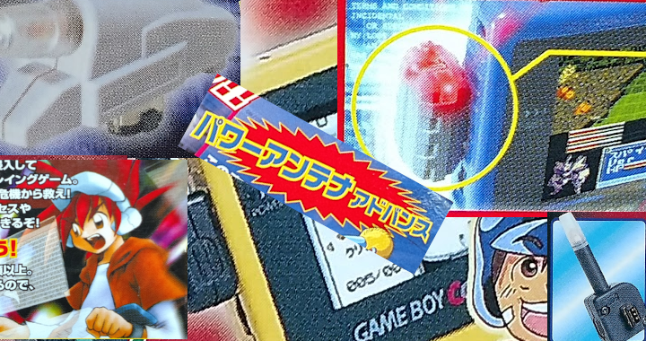
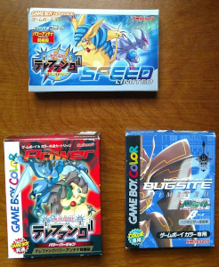
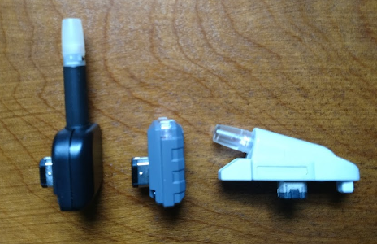
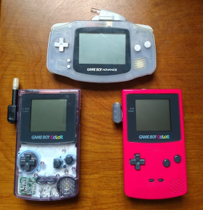
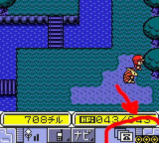

Blinkenlights
2019 is coming to a close. In the final days of this year, I look back at everything that's happened over the past months. The Soul Doll Adapter and the mysteries of its figurines were finally crushed. Together, endrift and I conquered the Chip Gates for the Mega Man Battle Network games. The Multi-Plust On System was vanquished swiftly with ease. And last but not least, the twin terrors of the Game Boy Turbo Files fell victim to reverse-engineering and research. In terms of emulating all of the weird, wacky, and wonderful hardware for the Game Boy, we've managed to cover a lot of ground. As I look at my TODO list for next year, I can pleasantly say that we're almost there folks. Only a few big items really remain as uncharted territory. 2020 probably won't be the year where every single crazy peripheral for the Game Boys will be emulated, but it'll be damn close.
Before I go on about the future, there were a few other items I ran across earlier that I never wrote about. To finish this year off, I'd like to introduce the Power Antenna and Bug Sensor. The Power Antenna came in 2 flavors for Keitai Denjuu Telefang on the GBC and for its sequel Keitai Denjuu Telefang 2 on the GBA. They are little plastic add-ons of various shapes that fit onto the serial port. The first version was meant to imitate the look and feel of the D-Shot used in the game, while the second version mimics a small transmitter on top of a GBA. The Bug Sensor is another small, almost rectangular piece of hardware used for the Network Adventure Bugsite games. So what do these accessories do? Do they add over-the-air Link Cable-esque functionality? Do they allow data downloads from the internet or cellphones? Maybe even something like the Neo Geo Pocket Wireless Communication Unit's ability to read radio waves?
Nope. They're just LEDs. All they do is flash on and off in response to certain events in the game. For example, in Telefang 1, whenever the player receives a phone call, the Power Antenna blinks rapidly. The three models are purely cosmetic. Interestingly enough, however, all three models are compatible with each game. If using something like a GBA, players can mix and match them as they please, as they all work in the same manner, more or less. I mean, it's an LED; there's no need to reinvent anything.
This is by far the most mundane and relatively tame accessory I've handled so far. It's just so... ordinary. There's nothing really special about a little red light encased in plastic. It calls into question whether or not something of this nature should be emulated at all. Video game preservation isn't always about the big and bold stuff. Many of the items I've investigated for these Edge of Emulation articles have been some pretty wild and innovative products, but I'm here to emulate everything, not just bits and pieces. For the sake of completeness and satisfying my own curiosity, I couldn't ignore the Power Antenna or the Bug Sensor.
Lightweight
Since there are 3 versions of these LEDs, I had to track down a copy of each game. The first trick here is making sure they had the accessory. The second was finding them at acceptable prices. At least on eBay, some sellers have some funny ideas of just what a real Complete-In-Box copy of Telefang 1 should cost. While CIB copies of Network Adventure Bugsite and Telefang 2 run anywhere from $15 - $25 USD, Telefang 1 runs anywhere from $15 - $120. The high end isn't for brand-new sealed copies either. A lot of Buy-It-Nows didn't come with the Power Antenna, and the ones that did seemed to be charging around $50 - $60. A bit of patience landed me one for well below that, and I'd say $25 - $35 is a fair range (as it is today, but back in January when I was looking around that was not the case). A hacked version of Telefang 1 was popularized as a bootleg Pokemon game for years, so perhaps that explains why some feel it has to command such a steep price.
  
Here we have all three games (at least one version of each) along with all three LEDs.
Around the start of March, I had managed to assemble all three versions of the LEDs and began testing them. I first observed how Telefang 1 worked on real hardware. As one can expect, there wasn't a great deal to see. Whenever a phone call came for the player, the Power Antenna blinked quickly. I did note that trying to enter the game's multiplayer mode triggered the LED. This hinted that it must have been rather trivial to activate the light. I theorized that simply blasting a couple of bytes through the serial port would be enough. If it's just a light, a binary on/off state would require nothing more fancy than sending a "0" or a "1".
Next, I dumped Telefang 1's ROM to my PC and booted it up in GBE+. I had the emulator record all writes to the serial port so I could see exactly what the game was sending during that phone call. As I expected, the game sent two values that caused the LED to flicker. One flipped it on, and the other flipped it off. Telefang 1 sent 0xFF to turn it on and 0x00 to turn it off. Easy enough, right? I didn't stop probing there, however. Since the game's multiplayer mode activated the light with different values, I suspected that the Power Antenna used only 1 bit in particular. 0xFF covers all 8-bits in a byte, but it provided no clue as to which one the hardware actually used. As a matter of science, I had to know which one exactly.
Fortunately, a while ago, I had whipped up a homebrew Game Boy test ROM that could ping any device attached to the serial port with any byte of my choosing. At first I thought the last bit, Bit 7 might have been responsible for turning on the light. Interestingly enough, while setting Bit 7 got the light to come on, it barely stayed lit for but a few fractions of a second. Eventually I discovered that Bit 0 being set permanently causes the light to turn on. As strange as it may seem, the Power Antenna is capable of producing two separate kinds of lights. The first one is "Weak Light" and fades swiftly. The other is "Strong Light" which stays on until the game explictly disables it. For Weak Light, the Game Boy writes any non-zero value to the serial port with Bit 0 of that value not set. The light turns on and shuts off extremely fast. For Strong Light, the Game Boy writes any non-zero value to the serial port with Bit 0 of that value set. The light turns on indefinitely. The only way to turn off the light is by writing zero to the serial port. The Bug Sensor and the second version of the Power Antenna behaved in that same fashion, demonstrating Strong and Weak Lights. I have not fully played through all three of the games, but I don't believe the Weak Light was ever meant to happen under normal circumstances. The LED is far too faint in that mode, to the point where it's barely visible without playing in total darkness. It's probably just a funny little quirk of the hardware.
At any rate, I had only discovered how things on the GBC worked. The GBA has a similar serial interface, but it has some notable differences as well. Armed with more homebrew test ROMs of my own, I began poking and prodding the 3 peripherals. While the GBA can use "Normal 8-bit" or "Normal 32-bit" modes that model DMG/GBC style transfers, the Power Antennae and Bug Sensor completely ignore the 8-bit or 32-bit data sent. Instead, the GBA sends a transfer while keeping its Serial Out line (Bit 3 of the SIOCNT register) high to turn the light on. To turn it off, the GBA simply pulls its Serial Out line low, no transfer necessary. Strong Light requires the Serial Out line to be set high when transferring. Weak Light requires the Serial Out line to be low when transferring. Essentially, when writing values to the GBA's serial communications control register, 0x89 is used for Strong Light, 0x81 is used for Weak Light, and 0x00 can be used to turn it off.
This is probably going to be the shortest, lightest article yet. There really isn't much else to say. The GBA does mess around with serial communications a bit when the BIOS runs and the boot-up screen plays. It's enough to cause the Power Antennae and Bug Sensor to light up permanently until the game sends something else. By turning the lights on and off, any sort of pattern can be made. Weak Light is generally so short-lived that it can't be seen unless software constantly keeps sending the correct values. To date, all 3 LEDs are the only devices I've seen on the GBA that make use of the Serial Out line's status during inactivity. Other than all that, there aren't a lot of secrets here. GBE+ emulates the LEDs by displaying a tiny icon at the bottom right corner. It's pretty useless though, given that each game uses audio and visual cues anyway to alert players to events that trigger the light. One last thing to mention is that the GBA SP screen completely blocks the LEDs, thereby rendering them moot. Even if the Power Antennae and the Bug Sensor are small bits of the Game Boy's history, it was still important and worthwhile to fully explore them.

It would be cool to have a custom background (similar to the Super Game Boy) that mimics an attached Power Antenna, but that's a lot of work for such a simple accessory.
Light at the end of the tunnel
As I said, the world of exotic Game Boy hardware is a lot less mysterious now than a few years ago. We've really cracked a number of major cases, and 2020 is going to be no different. What exactly comes next? Well, I've already spoken about the Singer IZEK 1500 and its Jaguar JN-100 and JN-2000 counterparts. They're prime targets for next year. There are still a number of special cartridges with their own IR functions, along with RTCs and built-in speakers. And what would the new decade be without throwing in a few robot dinosaurs for the GBA?
On a related note, I'll finally be picking up where I left off with my Emulating the Nintendo DS series of articles. It's been almost 3 years since I wrote about my initial experiences emulating NDS stuff, but I've honestly been stuck in a rut for most of that time, making very little progress. As detailed in my continuous NDS rolling blog, I've made significant progress over the past month to the point where many games boot and a handful are in a playable state. As such, expect something on that front soon. With all the improvements made to GBE+'s NDS core, it's now at the point where it can at least begin emulating some of the more unique pieces of additional hardware. With the number of unemulated Game Boy add-ons decreasing, is 2020 the year I take the Edge of Emulation to a new handheld?